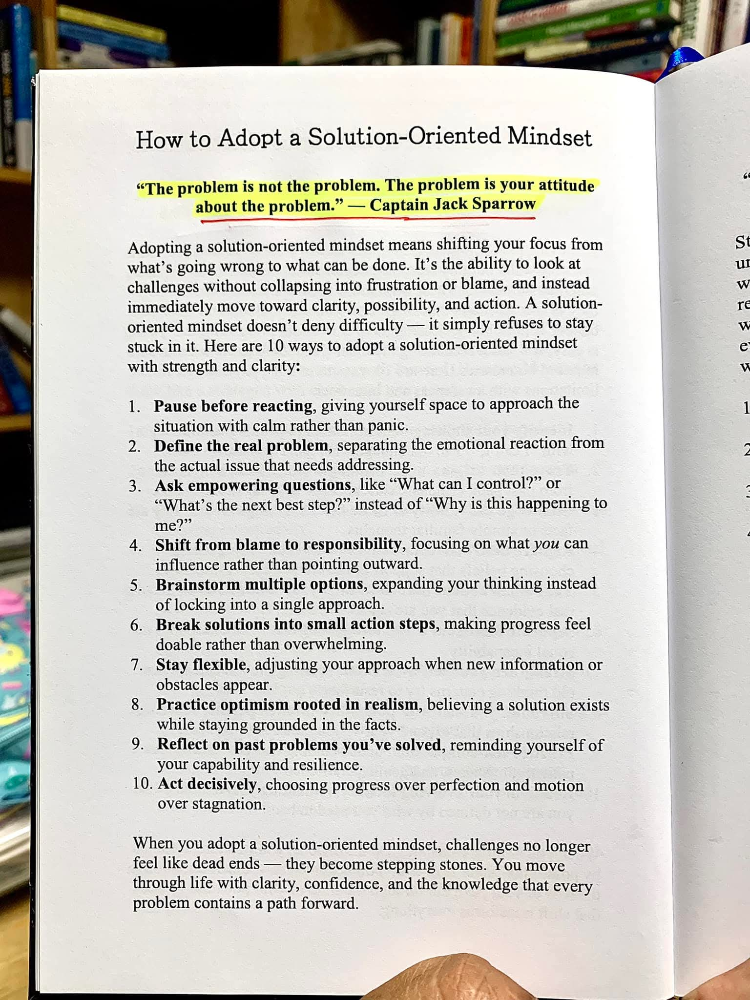

Angin sore di Ciumbuleuit selalu memiliki cara tersendiri untuk menyusup ke dalam tulang. Di bulan November, udara Bandung tidak sekadar dingin, melainkan membawa semacam melankolia yang mengendap bersama kabut tipis di sela-sela pohon pinus. Dari balik dinding kaca Kafe Akiha, sebuah kedai kopi yang mengadaptasi arsitektur Wabi-Sabi Jepang dengan sentuhan kayu mahoni lokal, Rania menatap tetesan air hujan yang mengular turun di permukaan jendela. Matanya kosong, meski layar laptop di hadapannya menyala terang, menampilkan desain cetak biru sebuah kompleks komersial yang bernilai miliaran rupiah.
Rania adalah seorang arsitek prinsipal di usianya yang baru menginjak dua puluh delapan tahun. Lulusan institut teknologi ternama di Bandung itu dikenal dengan desain-desainnya yang berani, memadukan elemen brutalist dengan lanskap tropis. Namun sore ini, keberaniannya seolah menguap bersama uap panas dari cangkir matcha latte yang tak tersentuh di mejanya. Proyek terbesarnya, Revitalisasi Cikapundung Riverfront, yang telah ia kerjakan siang dan malam selama delapan bulan terakhir, terancam batal total.
Pagi tadi, sebuah surat resmi dari pemerintah kota mendarat di meja kantornya. Surat itu berisi revisi peraturan tata ruang wilayah yang baru saja disahkan tengah malam sebelumnya. Garis sempadan sungai diperlebar lima belas meter. Bagi orang awam, lima belas meter mungkin hanya jarak lemparan batu. Bagi Rania, lima belas meter berarti menghancurkan seluruh struktur pondasi utama, menghilangkan area lobi, dan membuat perhitungan rasio luas bangunan terhadap lahan menjadi ilegal. Investor utama dari Singapura telah meneleponnya tiga kali sejak siang, nada suara mereka mulai meninggi, mengancam akan menarik seluruh dana jika Rania tidak bisa memberikan solusi sebelum hari Senin.
Dan hari ini adalah hari Jumat sore.
Terdengar bunyi gemerincing lonceng kecil di atas pintu masuk kafe. Dua sosok pria melangkah masuk, mengibaskan rintik hujan dari mantel dan payung mereka. Yang satu bertubuh tinggi dengan kacamata berbingkai bulat dan rambut sedikit gondrong yang diikat berantakan. Dia adalah Dimas, direktur kreatif di biro arsitektur Rania, sekaligus sahabatnya sejak masa ospek universitas. Di sebelahnya berdiri Bima, seorang konsultan data analitik dan pendiri perusahaan rintisan teknologi yang kantornya tak jauh dari situ. Bima selalu tampil rapi; kemeja flanel berlapis sweter rajut berwarna cokelat tanah, rambut tersisir rapi, dan wajah yang selalu memancarkan ketenangan yang kadang membuat Rania iri.
Melihat wajah Rania yang pucat pasi, Dimas langsung mempercepat langkahnya, menarik kursi kayu berlengan, dan menghempaskan tubuhnya dengan helaan napas dramatis.
"Aku sudah dengar kabarnya dari grup kantor," kata Dimas, suaranya sedikit bergetar karena campuran antara kedinginan dan kepanikan. "Ini gila, Ran. Pemkot benar-benar tidak masuk akal. Bagaimana mungkin mereka mengubah RTRW saat IMB kita sedang dalam proses finalisasi? Ini konspirasi, aku yakin. Pasti ada pengembang raksasa lain yang menyogok mereka untuk menjegal proyek kita."
Rania memijat pelipisnya yang berdenyut hebat. "Aku tidak peduli dengan konspirasi, Dim. Aku peduli pada kenyataan bahwa Mr. Lee akan menarik pendanaan sebesar dua ratus miliar rupiah hari Senin nanti kalau kita tidak punya rencana cadangan. Semua kerja keras kita, begadang berbulan-bulan, maket yang kita buat sampai tangan kita berdarah-darah terkena cutter... semuanya hangus."
Bima, yang baru saja kembali dari kasir membawa secangkir kopi V60 dengan biji kopi Ethiopia, duduk dengan tenang di hadapan mereka. Ia meletakkan cangkirnya dengan gerakan perlahan, tanpa suara benturan antara keramik dan meja kayu. Ia menatap Dimas yang sedang mengutuk-ngutuk sistem birokrasi, lalu beralih menatap Rania yang terlihat seperti sedang memikul beban seluruh kota Bandung di pundaknya.
"Kalian sudah selesai meratapinya?" tanya Bima datar, nada suaranya halus namun memotong tajam ke dalam histeria mereka berdua.
Dimas membelalakkan matanya. "Meratapi? Bim, kau tidak mengerti. Ini bukan masalah server aplikasimu yang down selama lima menit. Ini arsitektur. Ini beton, baja, dan hukum tata negara. Kita tidak bisa sekadar menekan tombol refresh dan mengembalikan lahan lima belas meter yang dirampas peraturan baru itu."
Rania mengangguk lemah, setuju dengan Dimas. "Kali ini Dimas benar, Bim. Ini jalan buntu. Desain kita berbasis pada geometri lahan yang lama. Mengubah lobi dan pondasi utama berarti merombak seluruh sistem struktural dari lantai dasar hingga lantai dua belas. Itu butuh waktu berbulan-bulan untuk dihitung ulang oleh ahli struktur. Hari Senin itu mustahil."
Bima menyesap kopinya perlahan, membiarkan aroma floral dan citrus memenuhi indra penciumannya. Ia kemudian merogoh saku dalam mantelnya dan mengeluarkan sebuah buku catatan kecil berbalut kulit asli yang selalu ia bawa ke mana-mana. Dari sela-sela halamannya, ia mengambil selembar kertas yang tampaknya merupakan robekan atau hasil cetak dari sebuah halaman buku yang ia baca akhir-akhir ini. Ia meletakkan selembar kertas bergambar itu di tengah meja, tepat di atas desain cetak biru Rania.

Rania menundukkan pandangannya, membaca teks yang ada di gambar tersebut. Kalimat yang disorot kuning langsung menangkap perhatiannya: The problem is not the problem. The problem is your attitude about the problem. — Captain Jack Sparrow.
"Jack Sparrow? Bajak laut fiktif dari Karibia itu yang kau jadikan konsultan krisis kita sekarang?" Dimas mendengus sinis, menyandarkan punggungnya ke kursi.
Bima tersenyum tipis, sebuah senyum yang menenangkan. "Jangan lihat siapa yang bicara, tapi lihat apa esensi yang disampaikan, Dim. Coba kalian perhatikan baik-baik tulisan di bawahnya. Ini bukan sekadar kutipan film. Ini adalah algoritma psikologis tentang bagaimana kita, sebagai manusia-manusia terdidik yang katanya ahli memecahkan masalah, seharusnya bereaksi terhadap krisis."
Bima menunjuk ke poin pertama di kertas itu. "Langkah satu. Jeda sebelum bereaksi. Beri ruang bagi dirimu untuk mendekati situasi dengan ketenangan, bukan kepanikan. Sejak kalian menerima email itu pagi tadi, apakah kalian sudah benar-benar berhenti untuk berpikir, atau kalian hanya terus-menerus bereaksi terhadap ketakutan kalian sendiri?"
Rania terdiam. Jujur pada dirinya sendiri, sejak membaca surat dari pemkot, otaknya langsung melompat ke skenario terburuk: kebangkrutan, pemecatan karyawan, hilangnya reputasi di kalangan arsitek, dan mimpi buruk dikejar hutang. Ia belum benar-benar duduk dan menelaah masalahnya dengan kepala dingin.
"Baik, aku sudah tenang sekarang," kata Rania, meski napasnya masih sedikit memburu. "Lalu apa? Mengubah sikapku tidak akan mengubah peraturan daerah, Bima."
"Tepat sekali," jawab Bima, telunjuknya meluncur ke poin kedua. "Definisikan masalah yang sebenarnya. Pisahkan reaksi emosional dari isu aktual yang perlu ditangani. Masalah sebenarnya bukanlah 'Pemerintah kota jahat dan ingin menghancurkan kita', seperti yang sedari tadi diulang-ulang oleh Dimas."
Dimas mendecakkan lidah, tapi ia mulai mendengarkan dengan serius.
"Masalah sebenarnya secara objektif adalah: Kita kehilangan lima belas meter lahan di sisi timur, yang memaksa kita untuk merelokasi massa bangunan lobi dan mengkalkulasi ulang beban struktural, serta mempresentasikan solusi tersebut pada hari Senin. Itu masalahnya. Sangat teknis, sangat terukur. Tidak ada drama di dalamnya," jelas Bima panjang lebar.
Rania mulai merasakan sesuatu bergeser di dalam kepalanya. Bima benar. Ketika masalah itu ditelanjangi dari segala ketakutan dan asumsi buruk, masalah itu berubah dari sebuah 'kiamat' menjadi sebuah 'persoalan matematika dan ruang'. Sebagai arsitek, persoalan ruang adalah makanan sehari-harinya.
"Poin ketiga," lanjut Bima, jarinya terus menelusuri teks di gambar tersebut. "Ajukan pertanyaan yang memberdayakan. Alih-alih bertanya 'Mengapa ini terjadi pada kita?', tanyakan 'Apa yang bisa kita kendalikan?'. Coba jawab, Rania. Apa yang masih berada di bawah kendalimu saat ini?"
Rania menatap cetak birunya. Pikiran analitisnya, yang sempat lumpuh oleh panik, perlahan mulai menyala kembali. "Aku... aku tidak bisa mengendalikan regulasi. Aku tidak bisa mengendalikan batas waktu Mr. Lee. Tapi... aku bisa mengendalikan desain di sisa lahan yang ada. Aku bisa mengendalikan cara kita mengomunikasikan perubahan ini kepada klien."
"Bagus," sahut Bima. "Dan poin keempat sangat berkaitan. Berhenti menyalahkan, mulailah mengambil tanggung jawab. Dimas, berhenti memikirkan siapa yang menyogok siapa di balai kota. Itu membuang energimu secara sia-sia. Fokus pada apa yang bisa kau pengaruhi."
Dimas menggaruk belakang kepalanya yang tidak gatal. "Oke, oke. Aku mengerti arah pembicaraan ini. Terus, bagaimana dengan poin kelima? Brainstorming beberapa opsi. Kau bilang tadi merombak struktur butuh waktu berbulan-bulan."
Hujan di luar semakin deras, ritmenya mengetuk kaca jendela dengan konstan. Di dalam Kafe Akiha, suasana di meja sudut itu telah berubah drastis. Energi keputusasaan yang tadinya pekat kini berganti menjadi energi intelektual yang berderak. Rania membuka aplikasi AutoCAD di laptopnya, layarnya memantulkan cahaya kejut di matanya yang kini berbinar tajam.
Mereka telah menghabiskan waktu satu jam untuk membedah poin kelima dan keenam: melakukan brainstorming opsi berganda dan memecah solusi menjadi langkah-langkah kecil. Rania menyadari bahwa mengadopsi pola pikir yang berorientasi pada solusi bukan berarti menyangkal bahwa mereka sedang berada dalam kesulitan besar. Itu bukan optimisme buta. Seperti yang tertulis di kertas yang dibawa Bima, itu adalah penolakan untuk tetap terjebak di dalam kesulitan tersebut.
"Coba kita lihat ini dari sudut pandang yang sama sekali berbeda," kata Rania, jemarinya menari cepat di atas touchpad. "Jika lobi konvensional memakan terlalu banyak ruang lantai dasar dan mengganggu pondasi utama karena aturan sempadan yang baru... bagaimana kalau kita tidak menggunakan lobi konvensional sama sekali?"
Dimas mencondongkan tubuhnya ke depan, matanya menyipit menatap layar. "Maksudmu?"
"Bagaimana kalau lobinya kita angkat ke lantai tiga?" Rania menarik garis virtual yang memotong bagian bawah bangunan di layarnya. "Kita biarkan lantai dasar menjadi ruang terbuka publik hijau yang menyatu dengan area sempadan sungai. Kita jadikan regulasi pemerintah kota sebagai keunggulan desain kita, bukan kelemahan."
Bima mengangguk kagum. "Luar biasa. Dalam istilah startup, ini namanya pivot. Alih-alih melawan arus regulasi, kau berselancar di atasnya."
"Secara struktural, ini malah bisa lebih ringan," Rania bergumam pada dirinya sendiri, otaknya bekerja dengan kecepatan penuh. "Kita bisa menggunakan struktur pilotis, tiang-tiang penyangga besar di lantai dasar, membiarkan aliran udara dan interaksi publik terjadi di bawah bangunan komersial. Lobi utama diakses melalui eskalator luar ruangan yang ikonik. Ini... ini justru desain yang jauh lebih ramah lingkungan dan modern dibandingkan desain lobi kaca masif kita yang lama."
"Tapi bagaimana dengan Mr. Lee?" tanya Dimas, kembali mengingatkan mereka pada sang naga penyandang dana. "Dia menyukai lobi mewah berlapis marmer di lantai dasar yang menyambut tamu dari jalan raya."
Di sinilah Bima kembali menunjuk ke kertasnya. "Poin ketujuh: Tetap fleksibel. Dan poin kedelapan: Praktikkan optimisme yang berakar pada realisme. Kau harus menjual ide ini bukan sebagai kompromi karena masalah regulasi, tetapi sebagai evolusi desain yang menguntungkan bisnisnya."
Rania mengangguk tegas. "Tepat. Realismenya adalah, jika Mr. Lee memaksakan lobi di lantai dasar, proyek ini ilegal dan tidak akan pernah dibangun. Optimismenya adalah, dengan lobi di lantai tiga dan lantai dasar sebagai ruang terbuka hijau, kita bisa mendapatkan sertifikasi bangunan hijau kelas platinum. Nilai jual propertinya akan naik secara eksponensial di mata perusahaan-perusahaan multinasional yang peduli pada aspek keberlanjutan."
Dimas, sang direktur kreatif, akhirnya tersenyum lebar. Imajinasi visualnya mulai bermain. "Aku bisa membuat render visualisasinya. Bayangkan, sebuah oasis urban di tengah Cikapundung. Pengunjung berjalan di bawah kanopi beton yang elegan, dikelilingi taman vertikal, naik perlahan menuju lobi yang melayang di atas kota. Ini gila, Rania. Ini jauh lebih puitis daripada desain asli kita."
"Ini poin kesembilan," ucap Bima dengan nada bangga. "Refleksi dari masalah masa lalu yang pernah kau selesaikan. Ingat proyek museum di Lembang tiga tahun lalu? Saat tanahnya ternyata memiliki kontur patahan aktif? Kalian tidak menyerah, kalian mendesain bangunan dengan sistem struktur terpisah yang fleksibel. Jika kalian bisa menaklukkan patahan tektonik, regulasi sempadan sungai hanyalah masalah teknis biasa."
Rania menatap Bima dan Dimas bergantian. Beban yang tadi menghimpit dadanya seakan terangkat. Dia menyadari betapa benarnya Jack Sparrow, atau siapa pun penulis buku yang dikutip Bima itu. Masalahnya bukanlah hilangnya lima belas meter lahan. Masalahnya adalah sikap kepanikan awal yang membuat pikirannya sempit dan buta terhadap alternatif lain. Begitu ia menggeser fokusnya dari 'apa yang salah' menjadi 'apa yang bisa dilakukan', dunia kemungkinan terbuka lebar.
Langkah kesepuluh. Bertindak tegas, memilih kemajuan di atas kesempurnaan dan pergerakan di atas stagnasi.
"Baiklah, mari kita bagi tugas," Rania berdiri, aura pemimpinnya kembali terpancar kuat, tak ada lagi keraguan dalam suaranya. "Dimas, aku butuh kau membuat sketsa konseptual kasar dan moodboard untuk konsep 'Floating Lobby' dan 'Riverfront Oasis' ini malam ini juga. Tidak perlu render sempurna, cukup representasi visual yang kuat untuk kita presentasikan."
"Siap, Bos," Dimas memberikan hormat ala militer sambil tersenyum. "Aku akan menggunakan palet warna yang hangat, menonjolkan elemen kayu dan tanaman merambat. Klien akan menangis terharu melihatnya."
"Bima," Rania beralih pada sahabatnya yang tenang itu. "Karena kau yang memicu ide ini, aku ingin meminta tolong. Kau punya koneksi dengan firma teknik sipil temanmu di Dago, kan? Bisakah kau menghubungkanku dengan kepala engineer-nya malam ini? Aku butuh justifikasi kasar bahwa struktur pilotis ini secara hitungan makro layak dibangun tanpa harus merombak fondasi dasar secara total. Hanya hitungan kasar untuk meyakinkan Mr. Lee hari Senin nanti."
Bima mengeluarkan ponselnya. "Aku akan meneleponnya sekarang. Dia berhutang budi padaku karena aku yang merancang sistem database perusahaannya."
Rania kembali duduk dan membuka lembar kerja baru di laptopnya. "Dan aku akan mulai mendraft ulang zoning vertikal bangunannya. Kita akan begadang akhir pekan ini, tapi kali ini bukan dengan keputusasaan. Kita akan merevolusi proyek ini."
Sore itu perlahan merayap menjadi malam. Lampu-lampu kuning hangat Kafe Akiha mulai menyala, memantulkan cahaya keemasan di atas meja kayu mereka yang kini penuh dengan sketsa, cangkir kopi yang kosong, dan energi yang bergejolak. Di luar, hujan mulai mereda, menyisakan aroma petrichor yang khas, aroma tanah basah Bandung yang selalu menjanjikan kehidupan baru setelah badai.
Hari Senin pagi di ruang rapat virtual bersama Mr. Lee di Singapura terasa sangat berbeda dari apa yang Rania bayangkan pada hari Jumat sore. Ia duduk tegak di depan kameranya, mengenakan blazer warna krem yang rapi, ditemani Dimas di sampingnya. Layar presentasi menampilkan render menakjubkan dari bangunan yang telah direvisi.
Rania tidak memulai presentasinya dengan permintaan maaf atau keluhan tentang regulasi kota. Ia memulainya dengan sebuah visi. Ia memutar narasi dari sebuah 'krisis kepatuhan' menjadi sebuah 'kesempatan inovasi'. Ia menjelaskan bagaimana pergeseran regulasi justru memberikan mereka ruang untuk menciptakan ikon arsitektur baru di Bandung—sebuah bangunan yang bernapas, yang mengembalikan ruang kepada alam dan masyarakat, sementara tetap memberikan eksklusivitas tingkat tinggi bagi para penghuni komersial di atasnya.
Mr. Lee, seorang pengusaha properti kawakan yang biasanya bermuka masam dan tak kenal ampun terhadap kesalahan, terdiam selama beberapa menit setelah presentasi selesai. Matanya menatap tajam ke layar, mengamati konsep lobi melayang dan ruang terbuka hijau tersebut.
"Ms. Rania," suara bariton Mr. Lee akhirnya memecah keheningan. "Ketika saya mendengar berita tentang perubahan tata ruang itu di hari Jumat, saya sudah memerintahkan tim legal saya untuk menyiapkan dokumen pembatalan kontrak. Saya benci kejutan dalam investasi saya."
Rania menahan napasnya, tangannya menggenggam tepi meja dengan kuat di bawah jangkauan kamera.
"Namun," lanjut Mr. Lee, sudut bibirnya sedikit terangkat membentuk sebuah senyuman tipis yang sangat langka. "Cara Anda merespons masalah ini... cara Anda tidak datang kepada saya dengan tangan kosong dan alasan, melainkan dengan sebuah solusi yang, secara jujur, jauh lebih elegan dan memiliki nilai jual yang lebih tinggi dari desain aslinya... itu impresif. Ini bukan sekadar arsitektur yang baik. Ini adalah manajemen krisis yang brilian."
Dimas menendang pelan kaki Rania di bawah meja, menyembunyikan senyum lebarnya.
"Kirimkan rincian kalkulasi kasarnya pada tim saya sore ini. Jika estimasi biayanya masih masuk akal, kita lanjut dengan konsep baru ini," pungkas Mr. Lee.
Setelah sambungan video terputus, Rania dan Dimas membuang napas panjang secara bersamaan, bersandar pada kursi mereka dengan rasa lega yang luar biasa. Mereka berhasil. Mereka mengubah jalan buntu menjadi batu loncatan.
Malam harinya, mereka bertiga kembali berkumpul, kali ini bukan di kafe, melainkan di sebuah restoran barbekyu bergaya Jepang di area Braga untuk merayakan kemenangan kecil mereka. Asap daging panggang mengepul di udara, berpadu dengan tawa dan obrolan ringan.
Bima mengangkat gelas teh ocha dinginnya. "Bersulang," katanya, menatap kedua temannya dengan tatapan bangga. "Untuk lobi melayang, untuk Bandung yang dingin, dan untuk Jack Sparrow."
Rania tertawa lepas, sebuah tawa yang telah hilang darinya selama beberapa hari terakhir. Ia mendentingkan gelasnya dengan gelas Bima dan Dimas. Di dalam hatinya, ia tahu bahwa perjalanan ke depan di proyek ini masih panjang dan penuh dengan tantangan teknis lainnya. Akan ada masalah-masalah baru yang muncul, kontraktor yang terlambat, atau material yang tidak sesuai spesifikasi.
Namun, sesuatu di dalam dirinya telah berubah secara fundamental. Lembaran kertas berisi sepuluh langkah yang Bima perlihatkan tempo hari kini tersimpan rapi di dalam laci meja kerjanya yang paling atas, bukan sekadar sebagai pajangan, melainkan sebagai sebuah doktrin pribadi.
Rania menyadari bahwa hidup, karir, dan segala kompleksitas di dalamnya tidak akan pernah berhenti melempar masalah. Berharap agar hidup berjalan tanpa rintangan adalah sebuah kenaifan. Esensi kedewasaan dan profesionalisme tidak diukur dari kemampuan kita menghindari badai, melainkan dari cara kita mengatur layar kapal saat badai itu menerjang.
Pola pikir yang berorientasi pada solusi adalah sebuah otot. Ia perlu dilatih terus-menerus melalui berbagai krisis. Ia membutuhkan kesadaran penuh untuk menarik diri selangkah mundur ketika insting purba menyuruh kita untuk lari atau menyerang secara membabi buta. Ia adalah keputusan sadar untuk memilih tanggung jawab daripada menyalahkan orang lain, untuk memilih pencarian jawaban daripada meratapi nasib buruk.
Malam itu, di bawah langit Bandung yang cerah setelah diguyur hujan berhari-hari, Rania melangkah keluar dari restoran dengan dada membusung ringan. Ia menatap jalanan Braga yang basah, memantulkan cahaya lampu jalanan yang temaram layaknya lukisan cat air. Masalah akan selalu ada, pikirnya. Tapi mulai sekarang, masalah itu hanyalah sebuah pertanyaan yang sedang menunggu dirinya untuk menemukan jawaban yang brilian.
Kembali ke Dashboard